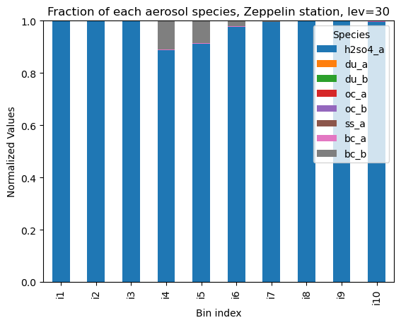

Dask example#
Shortened notebook to show reading of ECHAM Salsa data with dask
load dask and prepare for monitoring with a dashboard
# general
import numpy as np
import xarray as xr
import matplotlib.pyplot as plt
import pandas as pd
import os
import intake
# dask
import dask
from dask.distributed import Client
client = Client()
client
# launch dashboard requires that you wait "a moment" to properly start.
# (Workers appear with small blue bars).
Client
Client-163f0144-3169-11f0-8234-b6656b2e6aa2
| Connection method: Cluster object | Cluster type: distributed.LocalCluster |
| Dashboard: /user/fc%3Auid%3A6e025f8a-ece1-4b09-902e-b0ad7712fca5/proxy/8787/status |
Cluster Info
LocalCluster
0df3d1e9
| Dashboard: /user/fc%3Auid%3A6e025f8a-ece1-4b09-902e-b0ad7712fca5/proxy/8787/status | Workers: 4 |
| Total threads: 16 | Total memory: 16.00 GiB |
| Status: running | Using processes: True |
Scheduler Info
Scheduler
Scheduler-e02a7b83-aaee-4b8a-b53e-b5ec38bf7b77
| Comm: tcp://127.0.0.1:34885 | Workers: 4 |
| Dashboard: /user/fc%3Auid%3A6e025f8a-ece1-4b09-902e-b0ad7712fca5/proxy/8787/status | Total threads: 16 |
| Started: Just now | Total memory: 16.00 GiB |
Workers
Worker: 0
| Comm: tcp://127.0.0.1:34155 | Total threads: 4 |
| Dashboard: /user/fc%3Auid%3A6e025f8a-ece1-4b09-902e-b0ad7712fca5/proxy/36313/status | Memory: 4.00 GiB |
| Nanny: tcp://127.0.0.1:34511 | |
| Local directory: /tmp/dask-scratch-space/worker-1u0_ybvz | |
Worker: 1
| Comm: tcp://127.0.0.1:33761 | Total threads: 4 |
| Dashboard: /user/fc%3Auid%3A6e025f8a-ece1-4b09-902e-b0ad7712fca5/proxy/40963/status | Memory: 4.00 GiB |
| Nanny: tcp://127.0.0.1:36657 | |
| Local directory: /tmp/dask-scratch-space/worker-mco_s5_j | |
Worker: 2
| Comm: tcp://127.0.0.1:36913 | Total threads: 4 |
| Dashboard: /user/fc%3Auid%3A6e025f8a-ece1-4b09-902e-b0ad7712fca5/proxy/35863/status | Memory: 4.00 GiB |
| Nanny: tcp://127.0.0.1:36357 | |
| Local directory: /tmp/dask-scratch-space/worker-w_7d4xdo | |
Worker: 3
| Comm: tcp://127.0.0.1:39357 | Total threads: 4 |
| Dashboard: /user/fc%3Auid%3A6e025f8a-ece1-4b09-902e-b0ad7712fca5/proxy/45461/status | Memory: 4.00 GiB |
| Nanny: tcp://127.0.0.1:46081 | |
| Local directory: /tmp/dask-scratch-space/worker-yly1t0sp | |
Opening of the file, and use dask#
shortened to two species, (see also salsa_intro notebook)
filename = '/mnt/craas2-ns9988k/data/catalogs/salsa_catalog.json'
col = intake.open_esm_datastore(filename)
col.df['species'].unique()
cat = col.search(species=['bc','h2so4'], #,'du','ss','h2so4','oc'], #, now we get only the mass mixing ratios for all species
vertical_coord='pressure' # or 'hybrid' if you are fancy. This is only up to ~200hPa
# start_time=["2012-01-01"],
# end_time=["2015-01-01"]
#bin_index= ["i1"],
#variable = ["h2so4_1a1"],
#bin = ["1a1"],
#soluble = [True'],
#unit = ['kg/kg']
)
cat.df['species'].unique()
# USES DASK
dset_dict = cat.to_dataset_dict()
--> The keys in the returned dictionary of datasets are constructed as follows:
'bin_index'
/opt/conda/envs/pangeo-notebook/lib/python3.11/site-packages/intake_esm/core.py:253: FutureWarning: When grouping with a length-1 list-like, you will need to pass a length-1 tuple to get_group in a future version of pandas. Pass `(name,)` instead of `name` to silence this warning.
records = grouped.get_group(internal_key).to_dict(orient='records')
/opt/conda/envs/pangeo-notebook/lib/python3.11/site-packages/intake_esm/core.py:253: FutureWarning: When grouping with a length-1 list-like, you will need to pass a length-1 tuple to get_group in a future version of pandas. Pass `(name,)` instead of `name` to silence this warning.
records = grouped.get_group(internal_key).to_dict(orient='records')
/opt/conda/envs/pangeo-notebook/lib/python3.11/site-packages/intake_esm/core.py:253: FutureWarning: When grouping with a length-1 list-like, you will need to pass a length-1 tuple to get_group in a future version of pandas. Pass `(name,)` instead of `name` to silence this warning.
records = grouped.get_group(internal_key).to_dict(orient='records')
/opt/conda/envs/pangeo-notebook/lib/python3.11/site-packages/intake_esm/core.py:253: FutureWarning: When grouping with a length-1 list-like, you will need to pass a length-1 tuple to get_group in a future version of pandas. Pass `(name,)` instead of `name` to silence this warning.
records = grouped.get_group(internal_key).to_dict(orient='records')
/opt/conda/envs/pangeo-notebook/lib/python3.11/site-packages/intake_esm/core.py:253: FutureWarning: When grouping with a length-1 list-like, you will need to pass a length-1 tuple to get_group in a future version of pandas. Pass `(name,)` instead of `name` to silence this warning.
records = grouped.get_group(internal_key).to_dict(orient='records')
/opt/conda/envs/pangeo-notebook/lib/python3.11/site-packages/intake_esm/core.py:253: FutureWarning: When grouping with a length-1 list-like, you will need to pass a length-1 tuple to get_group in a future version of pandas. Pass `(name,)` instead of `name` to silence this warning.
records = grouped.get_group(internal_key).to_dict(orient='records')
/opt/conda/envs/pangeo-notebook/lib/python3.11/site-packages/intake_esm/core.py:253: FutureWarning: When grouping with a length-1 list-like, you will need to pass a length-1 tuple to get_group in a future version of pandas. Pass `(name,)` instead of `name` to silence this warning.
records = grouped.get_group(internal_key).to_dict(orient='records')
/opt/conda/envs/pangeo-notebook/lib/python3.11/site-packages/intake_esm/core.py:253: FutureWarning: When grouping with a length-1 list-like, you will need to pass a length-1 tuple to get_group in a future version of pandas. Pass `(name,)` instead of `name` to silence this warning.
records = grouped.get_group(internal_key).to_dict(orient='records')
/opt/conda/envs/pangeo-notebook/lib/python3.11/site-packages/intake_esm/core.py:253: FutureWarning: When grouping with a length-1 list-like, you will need to pass a length-1 tuple to get_group in a future version of pandas. Pass `(name,)` instead of `name` to silence this warning.
records = grouped.get_group(internal_key).to_dict(orient='records')
/opt/conda/envs/pangeo-notebook/lib/python3.11/site-packages/intake_esm/core.py:253: FutureWarning: When grouping with a length-1 list-like, you will need to pass a length-1 tuple to get_group in a future version of pandas. Pass `(name,)` instead of `name` to silence this warning.
records = grouped.get_group(internal_key).to_dict(orient='records')
100.00% [10/10 00:52<00:00]
Exception ignored in: <function CachingFileManager.__del__ at 0x7fa8e5466ca0>
Traceback (most recent call last):
File "/opt/conda/envs/pangeo-notebook/lib/python3.11/site-packages/xarray/backends/file_manager.py", line 250, in __del__
self.close(needs_lock=False)
File "/opt/conda/envs/pangeo-notebook/lib/python3.11/site-packages/xarray/backends/file_manager.py", line 234, in close
file.close()
File "src/netCDF4/_netCDF4.pyx", line 2669, in netCDF4._netCDF4.Dataset.close
File "src/netCDF4/_netCDF4.pyx", line 2636, in netCDF4._netCDF4.Dataset._close
File "src/netCDF4/_netCDF4.pyx", line 2164, in netCDF4._netCDF4._ensure_nc_success
RuntimeError: NetCDF: Not a valid ID
Compute mean and use dask#
Invoke computation of mean values with compute command
# read the csv with station information
station_file = pd.read_csv('/mnt/craas2-ns9988k-dl-ns9560k/chrisvbr/ECHAM-SALSA-data/locations.csv', delimiter = ',', index_col=0)
names = np.array(station_file.columns)
# replace ncells with station names
for key in dset_dict.keys():
dset_dict[key] = dset_dict[key].rename({'ncells': 'station'}).reset_coords(drop=True)
dset_dict[key]['station'] = ('station', names)
dset_dict['i1'].station
ZEP_mean = {}
for key, dataset in dset_dict.items():
time_mean = dataset.mean(dim='time') # Calculate the time mean
ZEP_mean[key] = time_mean.sel(station="ZEP").isel(plev=21).compute() # Select level and station
Visualisation#
quick…, after data are in the aggregated structure
sorted_keys = sorted(ZEP_mean.keys(), key=lambda x: int(x[1:])) # sort by the bins by number (technically not necessary but it is neater)
ZEP_sorted = {key: ZEP_mean[key] for key in sorted_keys}
species_names = ['du_a', 'du_b', 'h2so4_a', 'oc_a', 'oc_b', 'ss_a'] # a for soluble, b for insoluble, consider changing this to du and du_insoluble
for key in ZEP_sorted.keys():
varnames = list(ZEP_sorted[key].data_vars)
species = [
(s[:-3] + s[-2:-1])
for s in varnames
]
rename_map = dict(zip(varnames, species))
ZEP_sorted[key] = ZEP_sorted[key].rename(rename_map)
for i in species_names:
if i not in species:
ZEP_sorted[key][i] = np.array(0.)
data = []
# Get values from each bin/variable
for bin_key in ZEP_sorted.keys():
bin_values = {var_key: ZEP_sorted[bin_key][var_key].values.tolist() for var_key in ZEP_sorted[bin_key].keys()}
# Add the bin values along with the bin key to the data list
data.append({'bin_index': bin_key, **bin_values})
df = pd.DataFrame(data)
df.set_index('bin_index', inplace=True)
# Normalize the transposed DataFrame so that each category sums up to 1
df_normalized = df.div(df.sum(axis=1), axis=0)
# Create a stacked bar plot with categories on the x-axis
ax = df_normalized.plot(kind='bar', stacked=True)
plt.title("Fraction of each aerosol species, Zeppelin station, lev=30")
plt.xlabel("Bin index")
plt.ylabel("Normalized Values")
plt.legend(title="Species", loc='upper right')
plt.ylim(0, 1)
plt.show()
